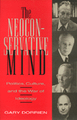

<body bgcolor="#FFFFFF" text="#000000" link="#0000FF" vlink="#CC0000" alink="#CC0000"><center><hr width="350" size="1" align="center" noshade>The life and times of a powerful ideological force in America<hr width="350" size="1" align="center" noshade><p><a href="https://cdcshoppingcart.uchicago.edu/Cart/ChicagoBook.aspx?ISBN=9781566390194&&PRESS=temple" target="_top">Buy this book!</a> | <a href="https://cdcshoppingcart.uchicago.edu/Cart/Cart.aspx?PRESS=temple" target="_top">View Cart</a> | <a href="https://cdcshoppingcart.uchicago.edu/Cart/Cart.aspx?PRESS=temple" target="_top">Check Out</a></p><p></p></center><!--none//--><h1>The Neoconservative Mind</h1>
<H2>Politics, Culture, and the War of Ideology</H2>
<h3>Gary Dorrien</h3>
<P>cloth 1-56639-019-2 $64.50, <FONT COLOR=#990033>Out of Stock Unavailable</FONT>
<br>paper 1-56639-144-X $26.95, <FONT COLOR=#990033>Out of Stock Unavailable</FONT>
<BR> 512 pp
6x9
</P><h3 align="center"><P><font color="#996633">Outstanding Academic Title, <i>Choice</i>,
1994</font></P>
</H3>
<BLOCKQUOTE><I>"...a powerful and groundbreaking analysis...."</I>
<br>&#151<b>Joseph Schwartz</b>, Temple University, member of the National Political Committee of Democratic Socialists of America<I></I></BLOCKQUOTE>
<p>For the past generation, neoconservatism has been the most powerful intellectual movement in American politics. Focusing on four of its most influential theorists&#151Irving Kristol, Norman Podhoretz, Michael Novak, and Peter Berger&#151Gary Dorrien presents a sweeping analysis of neoconservatism's history, ideology, and future prospects. He argues that it has the potential to become America's first genuine conservative intellectual tradition. Interviews with all the principal figures as well as with Michael Harrington and other opponents yield a rich and colorful portrayal of the figures and the publications that have shaped this ideological force.
<p>Neoconservatism grew out of the Old Left and retains the marks of its origins in the factional New York Intellectual debates of the 1930s. Dorrien traces the multiple strands that contributed to the new movement: former Trotskyites, trade unionists, and right-wing social democrats who opposed the countercultural movements of the 1960s, were disillusioned with the Great Society, felt alienated from the "fashionable liberal elite," and were repulsed by the anti-American sentiments of the Left. They attacked the "new class," an amorphous group of non-producing elites that at various times included liberal intellectuals, "parasitic" managers, and bureaucrats, social workers and psychologists, the major media, consultants, administrators, and lawyers.
<p>Throughout the fascinating intellectual biographies of Kristol, Podhoretz, Novak, and Berger, Dorrien describes the vast array of New York literati and political pundits who are or have been associated with these neoconservative leaders. Naming <I>Commentary</I>, <I>The New Republic</I>, <I>The Public Interest</I>, <I>Orbis</I>, <I>The American Scholar</I>, <I>The New Leader</I>, <I>The American Spectator</I>, and <I>Society</I>, among others which have been established by or which regularly host the writings of prominent neoconservatives, Dorrien demonstrates the substantial influence of the movement.
<p>Dorrien characterizes neoconservatism by its militant anticommunist and capitalist economics, and its support of a minimal welfare state, the rule of traditional elites, and the return to traditional cultural values. He describes its different ideological currents, its feud with the traditional Right and the many camps from which its adherents converted. Tracking the movement's attainment of political power in the 1980s, he explains how the collapse of communism has fractured neoconservatism's foreign policy consensus, and analyzes the movement's subsequently heightened concern with cultural politics. While Dorrien does not aim to refute neoconservatism, he offers a respectful but strongly critical review of its development and examines the contradictions of its appeal.
<BR>&nbsp;<h2>Reviews</h2>
<p><I>"...a keen critical examination of the little sect of ideologues, most of them radicals formerly, whose influence during the past decade has been eclipsed, and perhaps extinguished, by the dissolution of the Soviet Union and the triumph of Clintonian liberals. Dr. Dorrien, not of their number, nevertheless perceives their talents and their infirmities. His impartial book, lucidly written, is painstakingly candid."</I>
<br>&#151<b>Russell Kirk</b>, author of <I>The Conservative Mind</I>
<p><I>"Professor Dorrien has written an extraordinarily clear, exhaustively researched exposition of the Neoconservative moment, an important chapter in recent American intellectual history. He provides extensive accounts of four of the leading representatives of the movement and, while he differs from them on many issues, his purpose is to provide a fair exposition of their thought. The book is a great achievement."</I>
<br>&#151<b>John C. Bennett</b>, President Emeritus and Professor of Social Ethics, Union Theological Seminary, and author of <I>Christian Realism</I>
<p><i>"This book can be read as a statement about the importance of recovering this tradition of debate. Those opposed to the neoconservative agenda might learn from its effective arguments and develop the theoretical framework and rhetoric for a politics of another sort."</i>
<br>&#151<b><i><a href="http://www.findarticles.com/p/articles/mi_m1058/is_n4_v112/ai_16540035" target="new">Christian Century</a></i></b>
<BR>&nbsp;<h2>Contents</h2><P>
<p>Preface
<br>1. What is Neoconservatism?
<br>2. The Struggle for the World: The Forerunners
<br>3. The War of Ideology: Irving Kristol
<br>4. The Culture of Appeasement: Norman Podhoretz
<br>5. The Renewal of Whiggery: Michael Novak
<br>6. Facing Up to Modernity: Peter Berger
<br>7. Fractured Conservatisms: The Politics of Culture and Empire
<br>8. Reconstructing Neoconservatism
<br>Notes
<br>Bibliography
<br>Index
</P><BR>&nbsp;<H2>About the Author(s)</H2>
<P><b>Gary Dorrien</b>, an Episcopal priest, is Associate Professor of Religion and Dean of Stetson Chapel, and Chair of the Humanities Division at Kalamazoo College. The most recent of his three previous books is <I>Reconstructing the Common Good</I>.</P>
<BR><H2>Subject Categories</H2>
<p></p>
<p align="center"><a href="https://cdcshoppingcart.uchicago.edu/Cart/ChicagoBook.aspx?ISBN=9781566390194&&PRESS=temple" target="_top">Buy this book!</a> | <a href="https://cdcshoppingcart.uchicago.edu/Cart/Cart.aspx?PRESS=temple" target="_top">View Cart</a> | <a href="https://cdcshoppingcart.uchicago.edu/Cart/Cart.aspx?PRESS=temple" target="_top">Check Out</a></p><p><font face="Arial" size="1"><a href="copyright.html" onMouseOver="window.status='Web Copyright Policy';return true;" onMouseOut="window.status=''" title="Web Copyright Policy">&copy;</a> 2015 <a href="http://www.temple.edu" target="new" onMouseOver="window.status='Link to Temple University home page';return true;" onMouseOut="window.status=''" title="Link to Temple University home page">Temple University</a>. All Rights Reserved. http://www.temple.edu/tempress/titles/959_reg.html</font></p>